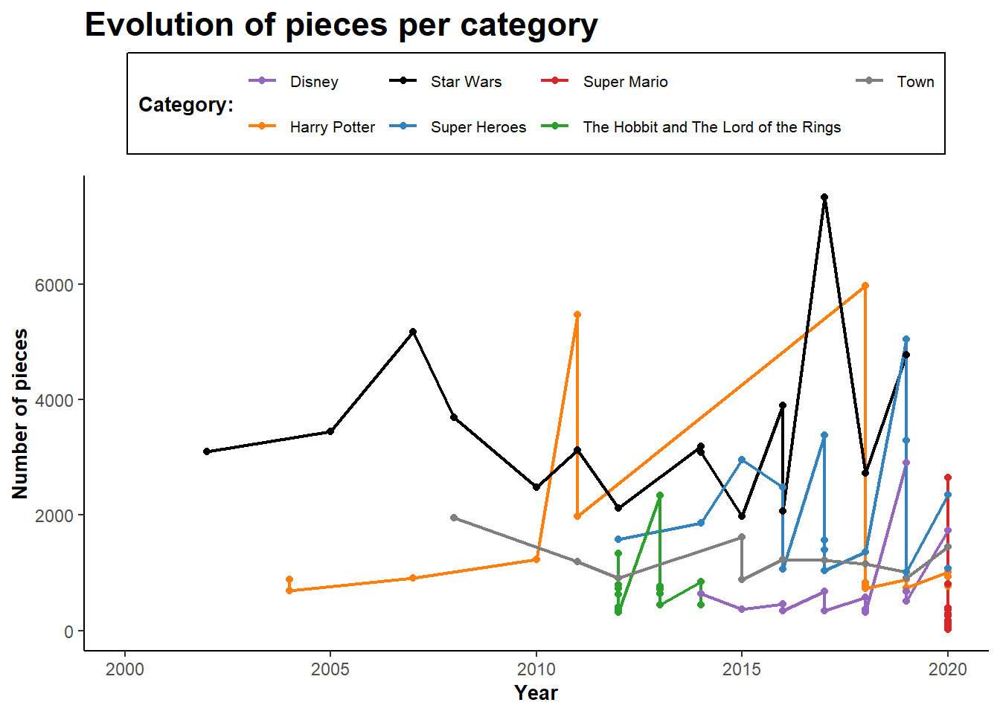
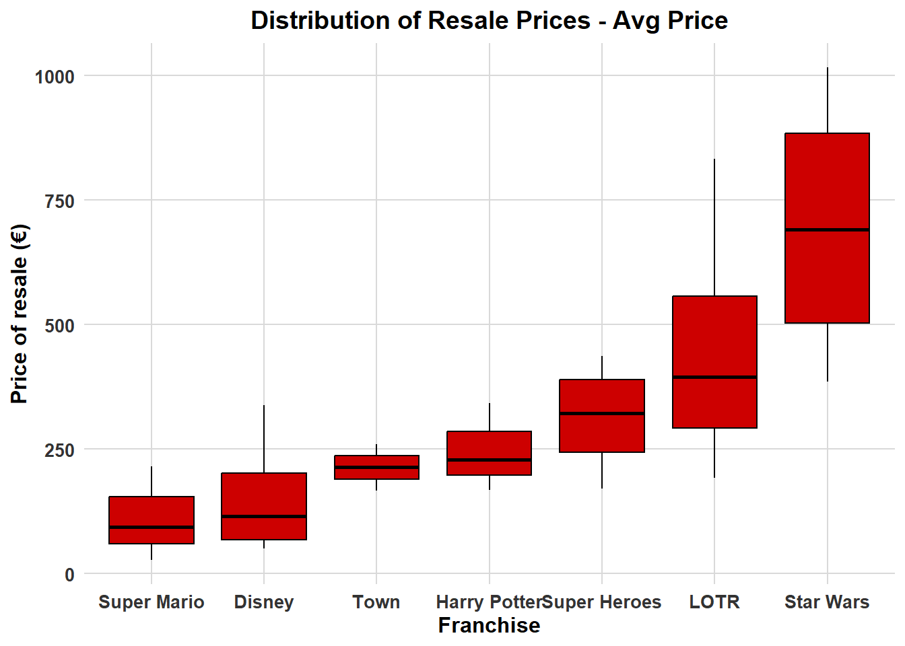
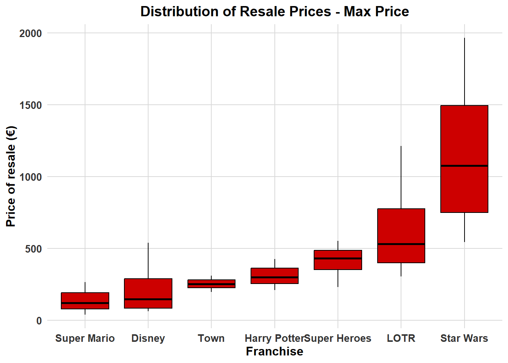
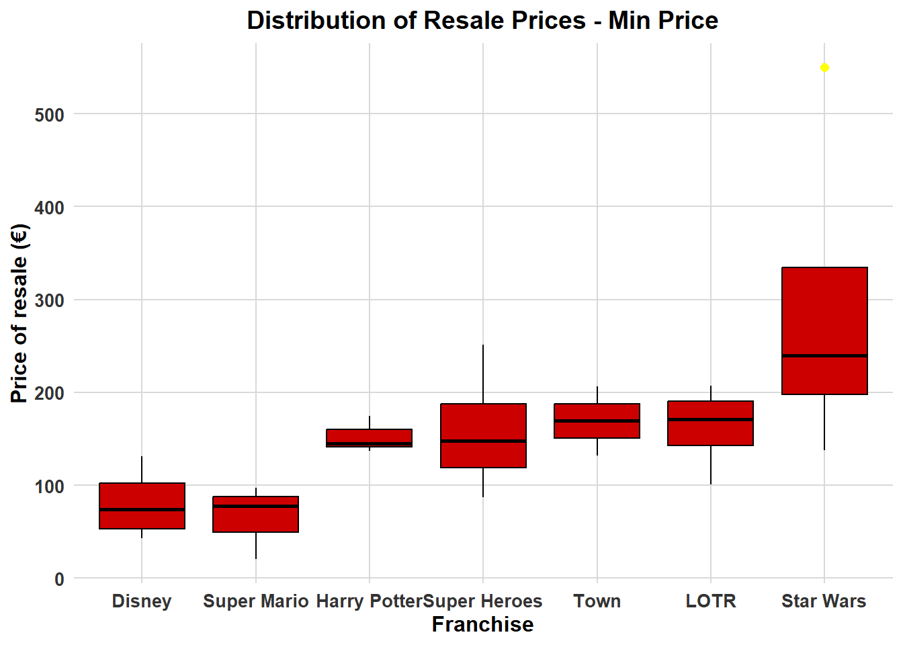
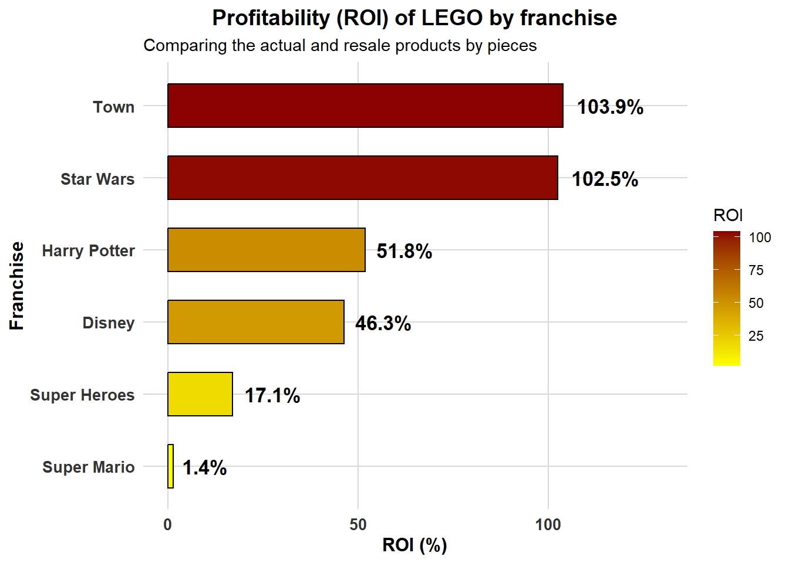

In recent years, LEGO sets have evolved from being mere children’s toys to highly sought-after investment assets. A study by the Higher School of Economics in Moscow revealed that the value of retired LEGO sets has increased by an average of 11% annually, outperforming many conventional investments since they appreciate in value faster than gold, stocks, or traditional bonds (Dobrynskaya & Kishilova, 2022). Factors such as exclusivity, franchise popularity, and set rarity directly influence their resale price, making LEGO an unexpected yet lucrative investment niche.
This project aims to explore the factors driving the revaluation of LEGO sets, analyzing how their prices change over time and identifying which sets offer the greatest return on investment. By examining historical and current market data, we seek to uncover patterns that influence a set’s desirability and long-term worth.
The official LEGO website: To obtain the current prices of sets available on the market.
BrickLink: A comprehensive online archive that tracks all LEGO sets, their specifications, and their price evolution over time.
The dataset will include essential details such as initial retail price, current market value, percentage appreciation, number of pieces and theme classification.
With the help of statistical analysis and visualizations, we will explore questions such as:
Which LEGO sets have appreciated the most over time?
Do certain themes, such as Star Wars or Modular Buildings, have higher investment potential?
How do factors like piece count and exclusive minifigures impact resale value?
To obtain and analyze this data, we will implement web scraping techniques using R and the rvest package, allowing us to track both historical and real-time pricing trends.
Through this research, we aim to uncover patterns that help identify which themes are the most profitable over time, providing valuable insights for both collectors and investors in this emerging market.
── Attaching core tidyverse packages ──────────────────────── tidyverse 2.0.0 ──
✔ dplyr 1.1.4 ✔ purrr 1.0.2
✔ forcats 1.0.0 ✔ readr 2.1.5
✔ ggplot2 3.5.1 ✔ tibble 3.2.1
✔ lubridate 1.9.3 ✔ tidyr 1.3.1
── Conflicts ────────────────────────────────────────── tidyverse_conflicts() ──
✖ dplyr::filter() masks stats::filter()
✖ readr::guess_encoding() masks rvest::guess_encoding()
✖ dplyr::lag() masks stats::lag()
ℹ Use the conflicted package (<http://conflicted.r-lib.org/>) to force all conflicts to become errors
library(tibble)library(readr)library(janitor)
Adjuntando el paquete: 'janitor'
The following objects are masked from 'package:stats':
chisq.test, fisher.test
library(shiny)
Warning: package 'shiny' was built under R version 4.4.2
library(plotly)
Warning: package 'plotly' was built under R version 4.4.2
Adjuntando el paquete: 'plotly'
The following object is masked from 'package:ggplot2':
last_plot
The following object is masked from 'package:httr':
config
The following object is masked from 'package:stats':
filter
The following object is masked from 'package:graphics':
layout
LEGO website
Let’s start the scraping process with the official Lego website. First thing we do is try to scrape just one link of one specific category and then construct a function and apply it to the other categories we are interested in.
This first code is to extract the prices from every product of the first page of the Disney franquise:
disney <-"https://www.lego.com/es-es/themes/disney"disney <- disney |>read_html()prices <- disney |>xml_find_all("//div[@class='ProductLeaf_priceRow__RUx3P']") |>html_text() prices <-gsub(",", ".", prices)prices <-str_replace(prices, "\\s?€$", "") |>as.numeric()prices
titles <- disney |>xml_find_all("//a[@class='ds-body-md-medium ProductLeaf_title__1UhfJ ']") |>xml_children() |>html_text()titles
[1] "Castillo de Bella y Bestia"
[2] "Castillo Disney"
[3] "Heihei"
[4] "Casa en la Playa de Lilo y Stitch"
[5] "Cabaña de Blancanieves y los Siete Enanitos"
[6] "Cámara en Homenaje a Walt Disney"
[7] "Magia Disney"
[8] "Trajes de Maléfica y Cruella De Vil"
[9] "Barcaza de los Kakamora"
[10] "Disney Tim Burton: Pesadilla antes de Navidad"
[11] "Dumbo"
[12] "El Rey León: Simba Joven"
[13] "El Rey León: Simba Cachorro"
[14] "Traje de Cenicienta"
[15] "Casa de “Up”"
[16] "Ígor"
[17] "Diversión en la Isla con Vaiana"
[18] "Stitch"
And finally the code to extract the number of pieces of each product:
pieces <- disney |>xml_find_all("//span[@data-test='product-leaf-piece-count-label']")|>html_text() |>as.numeric()pieces
Next, we create the function that automatizes this process, and then apply every link of every category to the function
# Function for LEGO Disney dataextract_lego_data <-function(base_url, max_pages =4) {# List to store the results lego_list <-list() for (page_num in1:max_pages) { page_url <-paste0(base_url, "?page=", page_num, "&offset=0") page <-read_html(page_url)# Extract the blocks of each product product_nodes <- page |>xml_find_all("//article[@class='ProductLeaf_wrapper__H0TCb ']") # Extract the information of each block/product titles <- product_nodes |>xml_find_first(".//a[contains(@class, 'ProductLeaf_title')]") |>html_text() prices <- product_nodes |>xml_find_all("//div[@class='ProductLeaf_priceRow__RUx3P']") |>html_text() prices <-gsub(",", ".", prices) prices <-str_replace(prices, "\\s?€$", "") |>as.numeric() pieces <- product_nodes |>xml_find_first(".//span[@data-test='product-leaf-piece-count-label']") |>html_text() |>as.numeric()# Create a temporal dataframe lego_page <-tibble(Title = titles,Price = prices,PieceCount = pieces)# Store the results lego_list[[page_num]] <- lego_pageSys.sleep(2) }# Combine all pages in a single df lego_data <-bind_rows(lego_list)return(lego_data)}
Categories wanted
The categories/franchises chosen for this study based on relevance are Disney, Harry Potter, Star Wars, Super Mario Bros, Marvel and the City theme one.
#Lord of the Ringsurl_rings<-"https://www.lego.com/es-es/themes/lord-of-the-rings"lego_lotr <-extract_lego_data(url_rings, max_pages =2)|>mutate("Franchise"="Lord of the Rings")
Finally we converge all the categories to have all the products of the LEGO web in one dataset:
official_lego <-bind_rows( lego_disney, lego_city, lego_harryp, lego_lotr, lego_marvel, lego_starwars, lego_supermario)official_lego <- official_lego |>#the Nas are not LEGO sets but keychains or teddiesdrop_na (PieceCount)# To save it as a csv# write.csv(official_lego, "lego_official.csv", row.names = FALSE)
Bricklink
We begin the web scraping process for BrickLink, aiming to create a structured dataset containing all the products to be analyzed. Our objective is to extract key variables, including price, release year, and franchise affiliation. To achieve this, we need to scrape four different hyperlinks within the same website:
Main Category Page: The first hyperlink leads to a table listing all LEGO categories available on BrickLink. This includes the franchises we want to compare, such as Star Wars, Super Mario, and others.
Category-Specific Product Listings: Clicking on any franchise category takes us to a second hyperlink, which displays all products belonging to that category. This page provides details such as product names, associated LEGO sets, and the number of pieces each product contains.
Individual Product Details: By selecting a specific product, we are redirected to a third hyperlink that contains additional information, including the year the product was released. On this page, we also find an option labeled View Price Guide, which leads us to the final crucial dataset.
Price Guide – Last 6 Months Sales: The fourth hyperlink leads to the Last 6 Months Sales: New table, which is particularly important for our analysis. This table contains market data on products that were sold within the last 6 months, including variables such as the total quantity of sales of this product, its average price and its maximum price.
To construct our final dataset, we need to sequentially scrape each of these four hyperlinks. We will develop a function that systematically navigates through each of them, extracting relevant data at each stage until we obtain the complete table.
Categories selected
With these in mind, the first step in this process is to create a table with all categories available in the web and each link that leads to the second hyperlink with the Category-Specific Product Listings. We, then, filter for the specific categories we are interested in:
brick <-"https://www.bricklink.com/catalogTree.asp?itemType=S"brick <-read_html(brick)# All the links inside the main pagelinks <- brick |>html_nodes("a") |>html_attr("href")# Links of the main categoriescat_links <- links[grepl("catalogList.asp\\?catType=S&catString=[0-9]+$", links)]# Names of the main categoriescat_names <- brick |>html_nodes("a b") |>html_text()cat_links <-paste0("https://www.bricklink.com", cat_links)# Data.frame with all the infomain_categories <-data.frame(category_name = cat_names,category_url = cat_links)
Now we select only the variables that we are interested in.
main_categories <- main_categories |>filter(category_name %in%c("Town", "Disney", "Harry Potter", "The Hobbit and The Lord of the Rings", "Super Heroes", "Star Wars", "Super Mario"))
Then, we get the number of pages that every category has and we add it to the main_categories table . First we try for one single category (Star Wars in this case) to know which is the procedure to get the number of pages and then we create the function to apply it to the other categories later:
# First try only with Star Wars setssw_link <- main_categories |>filter(category_name =="Star Wars") |>select(category_url) |>as.character() sw <- sw_link |>read_html()sw_pages <- sw |>html_nodes(xpath ="//div[2]/div[2]/b[3]") |>html_text() |>as.numeric()sw_pages
[1] 20
It can be seen that the number of pages indicated for Star Wars is 20, which is correct as this is the number of pages containing products in this category on the website. The next step is to automate this process and apply it to the rest of the selected categories.
# Function to obtain the number of pages inside each categorysets_pages <-function(url) { link <-read_html(url) pages <- link |>html_nodes(xpath ="//div[2]/div[2]/b[3]") |>html_text() |>as.numeric()if (length(pages) ==0||is.na(pages)) { pages <-1 }Sys.sleep(3) #avoid overloading the websitereturn(pages)}
We apply the function to all previously selected categories.
# All the categoriesmain_categories <- main_categories |>mutate(n_pages =sapply(category_url, sets_pages))main_categories |>head(15)
category_name
1 Disney
2 Harry Potter
3 Star Wars
4 Super Heroes
5 Super Mario
6 The Hobbit and The Lord of the Rings
7 Town
category_url n_pages
1 https://www.bricklink.com/catalogList.asp?catType=S&catString=878 4
2 https://www.bricklink.com/catalogList.asp?catType=S&catString=227 4
3 https://www.bricklink.com/catalogList.asp?catType=S&catString=65 20
4 https://www.bricklink.com/catalogList.asp?catType=S&catString=768 11
5 https://www.bricklink.com/catalogList.asp?catType=S&catString=1095 4
6 https://www.bricklink.com/catalogList.asp?catType=S&catString=789 1
7 https://www.bricklink.com/catalogList.asp?catType=S&catString=67 32
Product data
Now that we have a list of the categories we can scrape and their product pages, we can go deeper and select relevant information for those products. In this section of the project we will try to extract all the non-price related product level information, i.e. name, link, number of pieces and year.
Products of Star Wars
For this part of the scraping we are going to start with the Star Wars products. First we select the sets in this category and then we extract the information contained in the pages, without selecting any specific set.
# Link vectorlink <-"https://www.bricklink.com/catalogList.asp?catType=S&catString=65"|>read_html()raw_links <- link |>xml_find_all("//div[@class='container-xl container-body l-pad-y l-margin-bottom catalog-list__body']//a") |>html_attr("href")# Filter only the ones that contain setsset_links <- raw_links[str_detect(raw_links, "/v2/catalog/catalogitem.page\\?S=")]base_url <-"https://www.bricklink.com"full_links <-paste0(base_url, set_links)
Now we get the names of every product of the Star Wars category:
Then we get the number of pieces each product has:
n_pieces <- link |>xml_find_all("//table[@class='bg-color--white catalog-list__body-main catalog-list__body-main--alternate-row']//font[@class='fv']") |>html_text()extract_info <-function(entry) { pieces <-str_extract(entry, "\\d+ Parts") |>str_remove(" Parts") set <-str_extract(entry, "(?<=Catalog: Sets:).*")return(tibble(Pieces =as.integer(pieces), Set = set))}
Finally, we create the function that generalizes all the previous steps in order to get a table with all the information: name, piece and the link that redirects us to each product link.
# Function to scrap the products and obtain the infoscrape_products <-function(base_url, total_pages) {# URL with pages paged_url <-paste0(base_url, "&pg=%d&v=1") # Add more pages all_names <-c() all_links <-c() all_pieces <-c() all_sets <-c()for (page in1:total_pages) {if (page ==1) { page_url <- base_url # First page } else { page_url <-sprintf(paged_url, page) # the rest } link <-read_html(page_url)# Links raw_links <- link |>xml_find_all("//div[@class='container-xl container-body l-pad-y l-margin-bottom catalog-list__body']//a") |>html_attr("href") set_links <- raw_links[str_detect(raw_links, "/v2/catalog/catalogitem.page\\?S=")] full_links <-paste0("https://www.bricklink.com", set_links)# Names names <- link |>xml_find_all("//table[@class='bg-color--white catalog-list__body-main catalog-list__body-main--alternate-row']//strong") |>html_text()# More info raw_data <- link |>xml_find_all("//table[@class='bg-color--white catalog-list__body-main catalog-list__body-main--alternate-row']//font[@class='fv']") |>html_text() cleaned_data <-map_dfr(raw_data, extract_info) all_names <-c(all_names, names) all_links <-c(all_links, full_links) all_pieces <-c(all_pieces, cleaned_data$Pieces) all_sets <-c(all_sets, cleaned_data$Set) }Sys.sleep(2)# Final dftibble(Name = all_names, Link = all_links, Pieces = all_pieces, Set = all_sets)}# Try with Star Warsbrick_starwars <-scrape_products("https://www.bricklink.com/catalogList.asp?catType=S&catString=65", total_pages =20)
The next step consists on applying the function to the rest of the categories, so we have a complete dataset of all the products that we will be analyzing.
# The rest of the categoriesall_products <- main_categories |>mutate(product_data =pmap(list(category_url, n_pages), scrape_products)) |>unnest(cols =c(product_data)) |>select(-c(category_url, n_pages))colSums(is.na(all_products))
As it can be seen, there are 402 sets that have missing values for the number of pieces. This is not an error of scraping, this is due to the fact that these products are sets of Legos that include several products in one offer. For this reason, we prefer to drop these missing cases. This would also decrease the loading time of future operations.
Now we have all the main information for the products organized in one table. However, to proceed with further analysis, we will have to add more information about these products.
Year
We also need to have the year that the product was released in order to have the older years of every category to make the comparison.
We first learn how to do it in just one product:
link_product <-"https://www.bricklink.com/v2/catalog/catalogitem.page?S=3219-1#T=S&O={%22iconly%22:0}"|>read_html()# To obtain the year of the productlink_product |>xml_find_all("//a[@class='links']") |>html_text() |>head(1)
[1] "2003"
And then we construct the function to apply it to every product:
scrape_years <-function(df) { df <- df %>%# function prepared to be applied in a dfmutate(year =map_chr(Link, function(product_url) { page <-tryCatch(read_html(product_url), error =function(e) return(NA))if (is.na(page)) return(NA)# Extract the year (first link in that class) product_year <- page %>%html_elements("a.links") %>%html_text(trim =TRUE) %>%head(1)return(product_year) }))return(df)}
After almost an hour we have each product with each year and all the parts in one dataset. We can save it in a .csv document in order not to lose the whole process.
Rows: 3250 Columns: 6
── Column specification ────────────────────────────────────────────────────────
Delimiter: ","
chr (4): category_name, Name, Link, Set
dbl (2): Pieces, year
ℹ Use `spec()` to retrieve the full column specification for this data.
ℹ Specify the column types or set `show_col_types = FALSE` to quiet this message.
years_products |>head(15)
# A tibble: 15 × 6
category_name Name Link Pieces Set year
<chr> <chr> <chr> <dbl> <chr> <dbl>
1 Disney Mickey's Fire Engine http… 26 Dis… 2000
2 Disney Minnie's Birthday http… 83 Dis… 2000
3 Disney Mickey's Car Garage http… 89 Dis… 2000
4 Disney Mickey's Mansion http… 121 Dis… 2000
5 Disney Mickey's Fishing Adventure http… 105 Dis… 2000
6 Disney Mickey Mouse's Propeller Plane http… 56 Dis… 2021
7 Disney Minnie Mouse's Ice Cream Shop http… 90 Dis… 2021
8 Disney Mickey Mouse & Minnie Mouse's Space R… http… 81 Dis… 2021
9 Disney Mickey Mouse & Donald Duck's Farm http… 111 Dis… 2021
10 Disney Mickey & Friends Fire Truck & Station http… 134 Dis… 2021
11 Disney Mickey and Minnie's Camping Trip http… 96 Dis… 2022
12 Disney Mickey, Minnie and Goofy's Fairground… http… 173 Dis… 2022
13 Disney Mickey and Friends Castle Defenders http… 198 Dis… 2022
14 Disney Parts for Disney Princess: Build Your… http… 79 Dis… 2018
15 Disney Rapunzel's Market Visit polybag http… 30 Dis… 2014
Getting the price links
Next thing to do is extract the final hyperlink that has all the information about prices. This is the process for just one link:
Next, we create a function that iterates through our entire dataset, extracting and adding each new link to a newly created column called price_link. This ensures that every product in our dataset is associated with its corresponding price history link.
extract_link <-function(url) { link_product <-tryCatch({read_html(url) #try }, error =function(e) {return(NULL) })if (is.null(link_product)) {return(NA) }# Extract the link wanted result <- link_product |>xml_find_all("//div[@id='_idPriceGuideLink']//a") |>html_attr("href")# We receive NA if the link is not foundif (length(result) ==0) {return(NA) }Sys.sleep(3)return(result)}
# We apply the function to the Link column in our tableall_products2 <- all_products %>%mutate(price_link = purrr::map_chr(Link, ~ {Sys.sleep(2) #break between every requestextract_link(.) }))
It looks like we have all the links scraped correctly. We can also save this table and not lose the progress.
Rows: 3250 Columns: 6
── Column specification ────────────────────────────────────────────────────────
Delimiter: ","
chr (5): category_name, Name, Link, Set, price_link
dbl (1): Pieces
ℹ Use `spec()` to retrieve the full column specification for this data.
ℹ Specify the column types or set `show_col_types = FALSE` to quiet this message.
all_products2 |>head(15)
# A tibble: 15 × 6
category_name Name Link Pieces Set price_link
<chr> <chr> <chr> <dbl> <chr> <chr>
1 Disney Mickey's Fire Engine http… 26 Dis… http://ww…
2 Disney Minnie's Birthday http… 83 Dis… http://ww…
3 Disney Mickey's Car Garage http… 89 Dis… http://ww…
4 Disney Mickey's Mansion http… 121 Dis… <NA>
5 Disney Mickey's Fishing Adventure http… 105 Dis… http://ww…
6 Disney Mickey Mouse's Propeller Plane http… 56 Dis… http://ww…
7 Disney Minnie Mouse's Ice Cream Shop http… 90 Dis… http://ww…
8 Disney Mickey Mouse & Minnie Mouse's Sp… http… 81 Dis… http://ww…
9 Disney Mickey Mouse & Donald Duck's Farm http… 111 Dis… http://ww…
10 Disney Mickey & Friends Fire Truck & St… http… 134 Dis… http://ww…
11 Disney Mickey and Minnie's Camping Trip http… 96 Dis… http://ww…
12 Disney Mickey, Minnie and Goofy's Fairg… http… 173 Dis… http://ww…
13 Disney Mickey and Friends Castle Defend… http… 198 Dis… http://ww…
14 Disney Parts for Disney Princess: Build… http… 79 Dis… http://ww…
15 Disney Rapunzel's Market Visit polybag http… 30 Dis… http://ww…
Once we have successfully extracted and stored all the links, we proceed with the merging of both datasets. The first dataset (years_products) contains detailed information about the products, including their names and associated years, while the second dataset holds all the extracted price history links.
# We select the column Name that is the reference column to join both datasets and the year column that is the one we don't have in the new datasetyears_products <- years_products |>select(Name, year)# Joining by nameall_products <- years_products |>left_join(all_products2, by="Name")
Warning in left_join(years_products, all_products2, by = "Name"): Detected an unexpected many-to-many relationship between `x` and `y`.
ℹ Row 133 of `x` matches multiple rows in `y`.
ℹ Row 133 of `y` matches multiple rows in `x`.
ℹ If a many-to-many relationship is expected, set `relationship =
"many-to-many"` to silence this warning.
all_products |>head(15)
# A tibble: 15 × 7
Name year category_name Link Pieces Set price_link
<chr> <dbl> <chr> <chr> <dbl> <chr> <chr>
1 Mickey's Fire Engine 2000 Disney http… 26 Dis… http://ww…
2 Minnie's Birthday 2000 Disney http… 83 Dis… http://ww…
3 Mickey's Car Garage 2000 Disney http… 89 Dis… http://ww…
4 Mickey's Mansion 2000 Disney http… 121 Dis… <NA>
5 Mickey's Fishing Adventure 2000 Disney http… 105 Dis… http://ww…
6 Mickey Mouse's Propeller P… 2021 Disney http… 56 Dis… http://ww…
7 Minnie Mouse's Ice Cream S… 2021 Disney http… 90 Dis… http://ww…
8 Mickey Mouse & Minnie Mous… 2021 Disney http… 81 Dis… http://ww…
9 Mickey Mouse & Donald Duck… 2021 Disney http… 111 Dis… http://ww…
10 Mickey & Friends Fire Truc… 2021 Disney http… 134 Dis… http://ww…
11 Mickey and Minnie's Campin… 2022 Disney http… 96 Dis… http://ww…
12 Mickey, Minnie and Goofy's… 2022 Disney http… 173 Dis… http://ww…
13 Mickey and Friends Castle … 2022 Disney http… 198 Dis… http://ww…
14 Parts for Disney Princess:… 2018 Disney http… 79 Dis… http://ww…
15 Rapunzel's Market Visit po… 2014 Disney http… 30 Dis… http://ww…
After merging the datasets, the next step is to check for any missing values (NA) in the newly created price_link column. These missing values indicate products that do not have a recorded price history. Since these products lack relevant data for our analysis, we remove them from the dataset to maintain data integrity and ensure accurate results.
colSums(is.na(all_products2))
category_name Name Link Pieces Set
0 0 0 0 0
price_link
153
The next step in the process was to extract the price data from the final hyperlink. Without a doubt, this was the most challenging part of the entire project, as retrieving the price information without getting blocked by the website proved to be nearly impossible. What follows is a detailed explanation of our approach and the steps we took to obtain the necessary data while attempting to bypass the website’s restrictions.
As always, we began by testing a single link to understand the process required to extract the price data. The table we aimed to retrieve contained key price-related information, including the minimum, maximum, and average prices of each product that was currently on sale and categorized as completely new. Additionally, it included details such as the total number of times the product had been sold and the total quantity sold.
# First try URLurl_guide <-"https://www.bricklink.com/catalogPG.asp?S=4493-1&ColorID=0"page_guide <-read_html(url_guide)
After reading the html, we can extract the data that we wanted following the XPaths located in the first table: “Last 6 Months Sales: New”. The data that we can extract from this table are the following: times sold, total quantity, min price, avg price, avg quantity price and max price. The difference between times sold and total quantity is that times sold focuses on the number of transactions in which the product was included; on the other hand, total quantity reflects the actual number of pieces of that item that have changed hands, regardless of the number of transactions.
Before proceeding with the full-function implementation, we decided to test another product to verify whether we could consistently extract all the necessary data.
# Other linkurl_guide2 <-"https://www.bricklink.com/catalogPG.asp?S=30162-1&ColorID=0"page_guide2 <-read_html(url_guide2)# Extract data through XPaths# Times Soldtimes_sold <- page_guide2 %>%xml_find_first("//table[@class='fv']//tr[1]//td[2]/b") %>%html_text(trim =TRUE)# Total Qtytotal_qty <- page_guide2 %>%xml_find_first("//table[@class='fv']//tr[2]//td[2]/b") %>%html_text(trim =TRUE)# Min Pricemin_price <- page_guide2 %>%xml_find_first("//table[@class='fv']//tr[3]/td[2]/b") %>%html_text(trim =TRUE)# Avg Priceavg_price <- page_guide2 %>%xml_find_first("//table[@class='fv']//tr[4]//td[2]/b") %>%html_text(trim =TRUE)# Qty Avg Priceqty_avg_price <- page_guide2 %>%xml_find_first("//table[@class='fv']//tr[5]//td[2]/b") %>%html_text(trim =TRUE)# Max Pricemax_price <- page_guide2 %>%xml_find_first("//table[@class='fv']//tr[6]//td[2]/b") %>%html_text(trim =TRUE)# Second tibbleprice_data2 <-tibble(Times_Sold = times_sold,Total_Qty = total_qty,Min_Price = min_price,Avg_Price = avg_price,Qty_Avg_Price = qty_avg_price,Max_Price = max_price)
We confirmed after numerous attempts that the method we had developed was the only one that worked reliably across all links. Other approaches we tried were only partially effective, as each link followed a slightly different structure, making it difficult to apply a single extraction strategy across the entire dataset.
Prices guide function
After finally determining the correct process for extracting the table, we proceeded to create a function that would generalize this method for every product. It is important to note that we implemented a well-structured Sys.sleep system. In this system, the script pauses every seven products for exactly five seconds. For the rest, it introduces a randomized pause of 3 to 5 seconds between each request.
# Global counter of productscounter <-0# Modified functionhistory_data <-function(price_link) { price_history_page <-tryCatch(read_html(price_link), #price guide historyerror =function(e) return(NULL))# If we can not read the link, we obtain NAsif (is.null(price_history_page)) {return(tibble(Times_Sold =NA, Total_Qty =NA, Min_Price =NA, Avg_Price =NA, Qty_Avg_Price =NA, Max_Price =NA)) }# Extract the data data <-tibble(Times_Sold = price_history_page %>%xml_find_first("//table[@class='fv']//tr[1]//td[2]/b") %>%html_text(trim =TRUE),Total_Qty = price_history_page %>%xml_find_first("//table[@class='fv']//tr[2]//td[2]/b") %>%html_text(trim =TRUE),Min_Price = price_history_page %>%xml_find_first("//table[@class='fv']//tr[3]/td[2]/b") %>%html_text(trim =TRUE),Avg_Price = price_history_page %>%xml_find_first("//table[@class='fv']//tr[4]//td[2]/b") %>%html_text(trim =TRUE),Qty_Avg_Price = price_history_page %>%xml_find_first("//table[@class='fv']//tr[5]//td[2]/b") %>%html_text(trim =TRUE),Max_Price = price_history_page %>%xml_find_first("//table[@class='fv']//tr[6]//td[2]/b") %>%html_text(trim =TRUE) )# Increase the products counter counter <<- counter +1# Pausesif (counter %%7==0) {Sys.sleep(5)# longer breaks } else {Sys.sleep(runif(1, min =3, max =5)) # normal pause }return(data)}
Before running the function on our entire data set of over 3,000 products, we decided to first test it on the first 20 products.
This is when the real nightmare began. During our initial trials, the function worked perfectly for the first three products, but for the rest, it returned only NA values. At first, we assumed the issue was related to how we were extracting the data, but when we manually tested random individual links, the scraping script worked 100% of the time.
We confirmed that this was not the problem when, upon running the function again, it only worked for five products. On the third attempt, it didn’t work for any products at all. This led us to conclude that the website was actively blocking our requests after detecting too many in a short period, even with the sophisticated Sys.sleep system we had in place.
To address this issue, we developed a new function with reinforced security measures. After conducting further research, we discovered several strategies that could enhance our web scraping security and help us avoid getting blocked.
First, to avoid detection, the code randomizes the User-Agent with each request. Websites often track User-Agents to identify automated traffic, so using a fixed one could easily trigger anti-bot mechanisms. Instead, the script includes a list of different User-Agents, mimicking requests from various browsers (Windows, Mac, Linux). Before each request, it randomly selects one, making it look as if different users are accessing the site.
Additionally, the script adds custom headers, including Accept-Language to simulate real browsing behavior and Referer, making it seem like the request is coming from Google. These small details help make the requests appear more legitimate and reduce the risk of detection.
To further increase stealth, sessions and cookies are handled using html_session(). Unlike a simple request with read_html(), this approach allows the scraper to maintain cookies, just like a real user browsing a site. Some websites track sessions to differentiate bots from humans, so this step helps blend in.
A key defensive mechanism in the script is the error handling with tryCatch(). Instead of stopping execution when an error occurs (for example, if a request is blocked or the page fails to load), tryCatch() ensures that the function gracefully handles the issue. If a request fails, the script returns NA values and moves on to the next product. This prevents the scraper from breaking due to temporary access issues.
Moreover, if the website returns a CAPTCHA or an access restriction, the script automatically saves the blocked HTML response into a file (“error_page.html”) for later inspection. This helps analyze whether the site is serving CAPTCHAs, blocking requests, or requiring LogIn credentials.
Finally, randomized delays between requests help avoid bot detection. Instead of making rapid, predictable requests (which would be a clear sign of automation), the script introduces pauses between 10 and 15 seconds after each request, and every 7 products, it waits even longer—between 20 and 30 seconds. This mimics natural human browsing patterns, making the scraper much harder to detect.
# User-agents to rotate and not being blockeduser_agents <-c("Mozilla/5.0 (Windows NT 10.0; Win64; x64) AppleWebKit/537.36 (KHTML, like Gecko) Chrome/91.0.4472.124 Safari/537.36","Mozilla/5.0 (Macintosh; Intel Mac OS X 10_15_7) AppleWebKit/537.36 (KHTML, like Gecko) Chrome/90.0.4430.212 Safari/537.36","Mozilla/5.0 (X11; Linux x86_64) AppleWebKit/537.36 (KHTML, like Gecko) Firefox/89.0")counter <-0# To count the number of products and then do a larger pause each 7 products scrappedhistory_data <-function(price_link) { random_user_agent <-sample(user_agents, 1) # random user headers <-add_headers("User-Agent"= random_user_agent,"Accept-Language"="en-US,en;q=0.9", # simulate a real browser"Referer"="https://google.com" )# create a log in with cookier and user-agent session <-tryCatch(html_session(price_link, headers), error =function(e) return(NULL))if (is.null(session)) {print("Error logging in. Probably blocked.")return(tibble(Times_Sold =NA, Total_Qty =NA, Min_Price =NA, Avg_Price =NA, Qty_Avg_Price =NA, Max_Price =NA)) } price_history_page <-tryCatch(read_html(session), error =function(e) return(NULL))if (is.null(price_history_page)) { # read the htmlprint("Page blocked or CAPTCHA detected")writeLines(as.character(session), "error_page.html")return(tibble(Times_Sold =NA, Total_Qty =NA, Min_Price =NA, Avg_Price =NA, Qty_Avg_Price =NA, Max_Price =NA)) }# Data from Xpaths data <-tibble(Times_Sold = price_history_page %>%xml_find_first("//table[@class='fv']//tr[1]//td[2]/b") %>%html_text(trim =TRUE),Total_Qty = price_history_page %>%xml_find_first("//table[@class='fv']//tr[2]//td[2]/b") %>%html_text(trim =TRUE),Min_Price = price_history_page %>%xml_find_first("//table[@class='fv']//tr[3]/td[2]/b") %>%html_text(trim =TRUE),Avg_Price = price_history_page %>%xml_find_first("//table[@class='fv']//tr[4]//td[2]/b") %>%html_text(trim =TRUE),Qty_Avg_Price = price_history_page %>%xml_find_first("//table[@class='fv']//tr[5]//td[2]/b") %>%html_text(trim =TRUE),Max_Price = price_history_page %>%xml_find_first("//table[@class='fv']//tr[6]//td[2]/b") %>%html_text(trim =TRUE)) counter <<- counter +1# product countif (counter %%7==0) { pause_time <-runif(1, min =20, max =30) # longer pause every 7 } else { pause_time <-runif(1, min =10, max =15) # normal pause }print(paste("Waiting", round(pause_time, 2), "seconds before the next request..."))Sys.sleep(pause_time)return(data)}
After creating the new function, we tested it again on the first 20 products.
While at first, it seemed to work correctly, when we expanded the process to 50 products, the issue reappeared: the function only managed to extract data for the first three products before the website blocked further requests.
After attempting this process countless times, on different computers and using various approaches, we found that there was only one reliable way to make the function work:
We had to run the function on just the first 15 products of each category while changing the VPN to a different country every time we executed the script. This method was the only way to bypass the website’s detection and successfully extract the price data without getting blocked.
With this in mind, we optimized the selection of 15 products per category to ensure we obtained the most useful information for our analysis. To achieve this, we applied a filtering strategy:
For each category, we selected the 15 products with the highest quantity available while also ensuring that they were from before 2020. This approach allowed us to focus on the most relevant and historically significant products, maximizing the value of the extracted data while still working within the website’s restrictions.
Once we have the 15 products with the most number of pieces per each category, we have to apply the function to each category selected and then obtain the prices wanted.
We were finally able to extract the data correctly, although we have to switch the VPN every time we want to scrape a new category. Now we have the data separated, so the next step should be to merge them into a single data set.
As it can be seen, the different currencies are inside the prices measures. We have to extract this currencies and then transform the price data to numeric format.
final_products <- final_products |>mutate(currency =str_extract(min_price, "^[A-Za-z]+"), # Extract the currencymin_price =as.numeric(str_replace_all(str_extract(min_price, "[0-9,.]+"), ",", "")), avg_price =as.numeric(str_replace_all(str_extract(avg_price, "[0-9,.]+"), ",", "")),qty_avg_price =as.numeric(str_replace_all(str_extract(qty_avg_price, "[0-9,.]+"), ",", "")), max_price =as.numeric(str_replace_all(str_extract(max_price, "[0-9,.]+"), ",", ""))) # then we remove it from the rest
As it can be seen, the data is now presented in different currencies and we only want the EUR to compare different sets and categories. Hence, we have to select the official exchange rates obtained from the European Central Bank. These reference rates are usually updated at around 16:00 CET every working day so these values are only an approximation.
Thanks to all the data collected and stored in the previous sections, we can proceed with our final price analysis. To do this, we start by reading the final .csv documents, although we may already have them loaded in the environment.
brick <-read_csv("data/final_brick.csv")
Rows: 105 Columns: 13
── Column specification ────────────────────────────────────────────────────────
Delimiter: ","
chr (5): name, category_name, link, set, price_link
dbl (8): year, pieces, times_sold, total_qty, min_price, avg_price, qty_avg_...
ℹ Use `spec()` to retrieve the full column specification for this data.
ℹ Specify the column types or set `show_col_types = FALSE` to quiet this message.
Rows: 311 Columns: 4
── Column specification ────────────────────────────────────────────────────────
Delimiter: ","
chr (2): Title, Franchise
dbl (2): Price, PieceCount
ℹ Use `spec()` to retrieve the full column specification for this data.
ℹ Specify the column types or set `show_col_types = FALSE` to quiet this message.
category_colors <-c("Star Wars"="black","Super Mario"="#D62728","Harry Potter"="#FF7F0E","Town"="#7F7F7F","The Hobbit and The Lord of the Rings"="#2CA02C","Super Heroes"="#3182BD", "Disney"="#9467BD")theme_custom <-theme_minimal() +theme(axis.text.x =element_text(size=10, face="bold", color="gray20"),axis.text.y =element_text(size=10, face="bold", color="gray20"),axis.title =element_text(size=12, face="bold"),plot.title =element_text(size=14, face="bold", hjust=0.5),panel.grid.major =element_line(color="gray85"),panel.grid.minor =element_blank(),legend.position ="right" )
p1 <-ggplot(brick, aes(x = year, y = pieces, color = category_name, group = category_name)) +geom_line(linewidth =0.85) +# Lines grouped by categorygeom_point() +xlim(2000, 2020) +labs(title ="Evolution of pieces per category",x ="Year",y ="Number of pieces",color ="Category:") +scale_color_manual(values = category_colors) +theme_classic() +theme(legend.position ="top",axis.title =element_text(size=10, face ="bold"),title =element_text(size=14, face ="bold"),legend.text =element_text(size =8),legend.title =element_text(size =10, face ="bold"),legend.background =element_rect(color ="black", size =0.5))
Warning: The `size` argument of `element_rect()` is deprecated as of ggplot2 3.4.0.
ℹ Please use the `linewidth` argument instead.
p1
Warning: Removed 4 rows containing missing values or values outside the scale range
(`geom_line()`).
Warning: Removed 4 rows containing missing values or values outside the scale range
(`geom_point()`).

This graph illustrates the evolution of LEGO set sizes over time, comparing different franchises based on the number of pieces per set across various years. Each franchise follows a distinct trend, showing how LEGO has adjusted set sizes over time for different themes.
Star Wars and The Lord of the Rings (LOTR) appear to have some of the largest sets, with noticeable peaks in piece count, indicating the release of large, complex builds. Harry Potter also shows significant growth in set sizes, particularly in the later years. Meanwhile, Super Heroes, Disney, and Town exhibit more stable or modest growth, suggesting that their sets tend to remain in a lower piece range. Super Mario, being a newer franchise, has smaller sets overall, reflecting its recent introduction into the LEGO lineup.
This next code is designed to standardize franchise names and categorize LEGO sets by the number of pieces, allowing for a fair comparison of prices across sets with similar piece counts.
First, we unify franchise names to ensure consistency in analysis:
lego <- lego |>mutate(franchise =case_when( franchise =="City"~"Town", franchise =="Lord of the Rings"~"The Hobbit and The Lord of the Rings", franchise =="Marvel"~"Super Heroes",TRUE~ franchise ))|>rename(category_name = franchise)
Next, we define piece categories, grouping sets into predefined ranges like 0-500, 501-1000, and 5001+. This categorization is crucial because it allows us to compare prices fairly between sets that belong to similar size ranges, avoiding bias caused by sets with significantly different piece counts.
Finally, we calculate average resale and retail prices per franchise and piece category. The resales dataset computes the average, minimum, and maximum resale prices for each franchise and piece category, while actual_prices calculates the average current retail price for those same categories. These datasets are then merged into comparison_pieces, creating a structured dataset that enables a direct comparison of retail prices versus resale values within similar-sized sets.
`summarise()` has grouped output by 'piece_category'. You can override using
the `.groups` argument.
comparison_pieces <-left_join(resales, actual_prices, by =c("piece_category", "category_name"))
With this structured approach, our analysis ensures that price comparisons are meaningful, so this is the data set used for the next plots:
# Boxplot of average resale pricesp4 <-ggplot(comparison_pieces, aes(x=reorder(category_name, Avg_Resale_Price, FUN=median),y=Avg_Resale_Price)) +geom_boxplot(fill="red3", color="black", outlier.colour="yellow",outlier.size=2) +scale_x_discrete(labels =c("The Hobbit and The Lord of the Rings"="LOTR" )) +labs(title="Distribution of Resale Prices - Avg Price",x="Franchise", y="Price of resale (€)") + theme_customp4

# Boxplot of maximum resale pricesp2 <-ggplot(comparison_pieces, aes(x=reorder(category_name, Avg_Max_Resale_Price, FUN=median),y=Avg_Max_Resale_Price)) +geom_boxplot(fill="red3", color="black", outlier.colour="yellow",outlier.size=2) +scale_x_discrete(labels =c("The Hobbit and The Lord of the Rings"="LOTR" )) +labs(title="Distribution of Resale Prices - Max Price",x="Franchise", y="Price of resale (€)") + theme_customp2

# Boxplot of minimum resale pricesp3 <-ggplot(comparison_pieces, aes(x=reorder(category_name, Avg_Min_Resale_Price, FUN=median),y=Avg_Min_Resale_Price)) +geom_boxplot(fill="red3", color="black", outlier.colour="yellow",outlier.size=2) +scale_x_discrete(labels =c("The Hobbit and The Lord of the Rings"="LOTR" )) +labs(title="Distribution of Resale Prices - Min Price",x="Franchise", y="Price of resale (€)") + theme_customp3

The three boxplots provide a clear comparison of LEGO resale prices across different franchises, focusing on maximum, minimum, and average resale values. While each offers valuable insight, the average resale price is the most reliable indicator of a franchise’s long-term investment potential.
Looking at the maximum resale prices, Star Wars stands out as the most valuable franchise, with some sets reaching over €2,000. This suggests that Star Wars LEGO sets have the highest potential for appreciation, making them particularly attractive to collectors and investors. The Lord of the Rings (LOTR) follows closely behind, with some high-value sets, though not as consistently lucrative as Star Wars. On the other end of the spectrum, Super Mario and Disney display significantly lower maximum resale prices, indicating that even their most valuable sets do not reach the same level of demand in the secondary market.
However, the minimum resale prices tell a different story. Star Wars, despite having the highest peaks, also exhibits greater variability, with some sets reselling for as little as €50. In contrast, franchises like Harry Potter, Super Heroes, and Town show more consistency, with higher minimum resale values than Disney or Super Mario, meaning that even their less valuable sets tend to hold a decent price.
Despite these extremes, the average resale price provides the most balanced perspective, capturing overall market trends rather than isolated cases. Once again, Star Wars leads the way, with LOTR also performing strongly. These two franchises demonstrate not only the potential for extremely high resale values but also consistent overall profitability, making them the best choices for LEGO investment. Meanwhile, Super Heroes and Harry Potter maintain stable mid-range average prices, meaning they may not generate huge returns but are still relatively safe investments. On the lower end, Disney and Super Mario continue to underperform, reinforcing the idea that their sets do not appreciate significantly over time.
By comparing all three metrics, a clear pattern emerges: Star Wars is the strongest franchise overall, with high average resale prices, an exceptional ceiling, and significant but varied demand. LOTR follows closely, proving to be a solid investment choice as well. Super Heroes and Harry Potter offer stability, making them good secondary options, while Super Mario and Disney appear to be the least profitable, with lower resale values across the board.
comparison_pieces$ROI <- ((comparison_pieces$Avg_Resale_Price - comparison_pieces$Avg_Current_Price)/ comparison_pieces$Avg_Current_Price)*100df_sorted <- comparison_pieces |>drop_na(ROI) |>group_by(category_name) |>summarise(ROI =mean(ROI)) |>arrange(desc(ROI)) |>filter(!category_name =="The Hobbit and The Lord of the Rings")
p5 <-ggplot(df_sorted, aes(x=reorder(category_name, ROI), y=ROI, fill=ROI)) +geom_bar(stat="identity", width=0.6, color="black") +scale_fill_gradient(low="yellow", high="red4") +scale_y_continuous(limits =c(0, 130)) +labs(title="Profitability (ROI) of LEGO by franchise",subtitle="Comparing the actual and resale products by pieces",x="Franchise", y="ROI (%)") +coord_flip() +# Graph flippedgeom_text(aes(label=sprintf("%.1f%%", ROI)), hjust=-0.2, size=4.5, fontface="bold") + theme_customp5

The chart presents the Return on Investment (ROI) of LEGO by franchise, comparing the difference between the original retail price and the current resale value of LEGO sets. The ROI calculation, which measures the percentage increase or decrease in value, provides insight into which franchises are the most profitable investments.
Among all franchises, Town emerges as the most profitable, with an average ROI of 103.9%, meaning that its sets, on average, more than double in resale value compared to their original price. Closely following is Star Wars, with an ROI of 102.5%, further solidifying its reputation as one of the most lucrative LEGO franchises. The enduring demand for Star Wars sets, coupled with their limited availability over time, makes them highly valuable in the secondary market.
Moving down the list, Harry Potter and Disney demonstrate moderate profitability, with ROIs of 51.8% and 46.3%, respectively. While these sets appreciate in value over time, they do not generate the same level of returns as Town or Star Wars. Still, they remain solid investment options for those looking for moderate and relatively stable gains in the resale market.
In contrast, Super Heroes LEGO sets show a considerably lower ROI at just 17.1%, indicating that their resale value does not increase as significantly. While these sets do appreciate to some extent, their profitability remains limited compared to higher-performing franchises. The least profitable of all, however, is Super Mario, with an ROI of only 1.4%. This suggests that Super Mario LEGO sets tend to retain their original price with little to no increase in resale value, making them the least attractive option for investment.
Considering these trends, it is clear that Star Wars and Town are the best franchises for LEGO investors, offering the highest potential returns. Harry Potter and Disney provide decent but less impressive appreciation, making them suitable for collectors who are still looking for some level of profitability. Super Heroes offers limited investment potential, while Super Mario sets show almost no financial gain over time, making them the least appealing choice for resale.
Lastly, we can also show an interesting interactive plot with shiny and plotly packages to highlight category’s differences in prices and pieces.
# # Shiny and plotly interactive graph# ui <- fluidPage(# titlePanel("Products per category, prices and pieces"),# verticalLayout(# selectInput("x_var", # label = "Select the variable for the X axis:", # choices = c("Min price", "Max price", "Avg price"),# selected = "Min price"),# plotlyOutput("scatter_plot", height = "600px")))# # # Server for the app# server <- function(input, output) {# # output$scatter_plot <- renderPlotly({# # Dynamic selection based on the data# plot_data <- brick %>%# mutate(variable = case_when(# input$x_var == "Min price" ~ min_price,# input$x_var == "Max price" ~ max_price,# input$x_var == "Avg price" ~ avg_price))# # # We create the interactive graph# p <- plot_ly(plot_data, x = ~variable, y = ~pieces, type = 'scatter', # mode = 'markers', color = ~category_name, # text = ~name, colors = category_colors,# hoverinfo = 'text+x+y') #show name, x and y values# # p })}# # shinyApp(ui = ui, server = server)